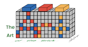

Nathan Sawaya


Nathan Sawaya is an acclaimed Los Angeles based artist who creates art out of a toy. His art focuses on large-scale sculptures using only LEGO bricks. He was the first artist to ever take LEGO bricks into the art world. He was also a lawyer, but he made a bold moave and left his law career behind in favor of LEGO art. Nathan Sawaya is now an author, speaker, and a well-known contemporary artist whose work speaks to all ages and is shown around the globe. "Art makes better humans, art is necessary in understanding the world and art makes people happy. Undeniably, art is not optional." - Nathan Sawaya